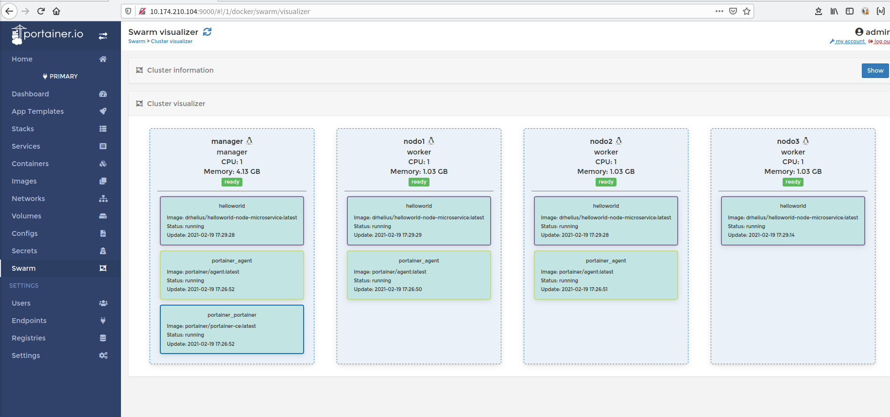

Cluster: Docker Swarm¶
1. Introducción¶
Se introduce este tema después de hacer las prácticas de Docker. Puede consultar esta referencia con una explicación de los conceptos de stack, service, nodo, etc: https://docs.docker.com/engine/swarm/key-concepts/
En la práctica se creará un cluster de 3 nodos que deben estar en la misma red: uno será el manager (gestor) y el resto workers. Para el despliegue de lso tres nodos puede elegir:
- Opción 1: crear tres máquinas virtuales con KVM (o VMware, Dropbox) e instalar docker en ellas.
- Opción 2: crear tres instancias EC2 en AWS
- Opción 3 específica de Ubuntu: usar la utilidad multipass para crear los tres nodos e instalar docker en ellos (ver anexo).
En esta práctica se opta por la primera de ellas.
2. Preparación del swarm¶
2.1. Nodos¶
- Se utiliza una máquina virtual ya preparada con Debian sin interfaz gráfico. Lleva instalada
docker,sudo,curly un servidor ssh. - Como se necesitan tres máquinas virtuales lo más sencillo es preparar una y clonar las otras dos (tiene instrucciones de cómo hacerlo en forma "diferencial" soft o linked en KVM en el anexo).
- Al iniciar las máquinas se modifica el hostname para que sea más sencillo identificarlas.
- Se accede mediante ssh desde el host a las máquinas virtuales: esto refleja una situación real de trabajo (y además permite copiar y pegar).
2.2. Iniciar el "enjambre" o swarm¶
Tenga en cuenta que:
- Las IPs de las máquinas virtuales dependerán de la configuración de cada sistema.
- Los usuarios en las máquinas virtuales pueden tener nombres distintos:
clases,alu,usuario, etc.
El primer paso es conectarse al nodo manager usando ssh:
clases@vm:~$ ssh alu@192.168.125.136
alu@192.168.125.136's password:
Linux manager 6.1.0-13-amd64 #1 SMP PREEMPT_DYNAMIC Debian 6.1.55-1 (2023-09-29) x86_64
...
alu@manager:~$
Rl cluster se inicia con el comando docker swarm init. Al iniciarlo muestra el token de invitación para los nodos tipo worker:
alu@manager:~$ docker swarm init
Swarm initialized: current node (szbzjfi2mbaiqif01al7u0qjg) is now a manager.
To add a worker to this swarm, run the following command:
docker swarm join --token SWMTKN-1-0fuvq18xzr6we68t2n584wernrf1nm0n0e3gz90cvaj4qm1a4z-8lefbc8r8qxwa7zhm2ulytpv0 192.168.125.136:2377
To add a manager to this swarm, run 'docker swarm join-token manager' and follow the instructions.
alu@manager:~$
Una vez iniciado puede comprobar con el comando docker node ls que el único nodo existente es el manager, que aparece como activo y con estado Leader
alu@manager:~$ docker node ls
ID HOSTNAME STATUS AVAILABILITY MANAGER
szbzjfi2mbaiqif01al7u0qjg * manager Ready Active Leader
alu@manager:~$
2.3. Unir nodos worker al "enjambre"¶
Para unir un nodo al cluster o enjambre es necesario usar un token de invitación. El token se muestra:
- al iniciar el cluster en el manager
- o ejecutando en el manager el comando
docker swarm join-token worker.
Por lo tanto para añadir un worker al cluster es necesario conectarse por shh al nuevo nodo y una vez conectado ejecutar el comando docker swarm join:
alu@worker-01:~$ docker swarm join --token SWMTKN-1-0fuvq18xzr6we68t2n584wernrf1nm0n0e3gz90cvaj4qm1a4z-8lefbc8r8qxwa7zhm2ulytpv0 192.168.125.136:2377
This node joined a swarm as a worker.
alu@worker-01:~$
En el nodo manager puede comprobar que el nodo se ha añadido con docker node ls:
alu@manager:~$ docker node ls
ID HOSTNAME STATUS AVAILABILITY MANAGER
9nhxurspobgirwh5m1d5h0fvf * manager Ready Active Leader
zm7acf20ysqblhalyeicrse6w worker-01 Ready Active
alu@manager:~$
3. Desplegar servicio¶
3.1. Despliegue manual¶
Para probar el cluster se crea en el manager un servicio que llamaremos helloworld usando la imagen repocurso/helloworld-node-microservice. Esta imagen es una aplicación web que muestra el nombre (id del contenedor) del equipo.
Observe cómo se crea el servicio (en este caso se hace con una única replica) con el comando docker service create:
alu@manager:~$ docker service create --replicas 1 --name helloworld -p 8080:8080 repocurso/helloworld-node-microservice
zzcmp70yivslrzdhqyxhjblyl
overall progress: 0 out of 1 tasks
overall progress: 1 out of 1 tasks
1/1: running
verify: Service converged
alu@manager:~$
Para probar el servicio use el comando curl (en vez de un navegador). Desde el manager:
alu@manager:~$ curl 127.0.0.1:8080
Hello World from host "8e088d6016c9".
alu@manager:~$
O desde el worker
alu@worker-01:~$ curl 127.0.0.1:8080
Hello World from host "8e088d6016c9".
alu@worker-01:~$
Puede acceder también desde cualquiera de los dos nodos con la IP de los nodos, y en todos los casos se accede correctamente al servicio aunque el contenedor esté sólo en uno de los nodos:
alu@manager:~$ curl 192.168.125.136:8080
Hello World from host "692f6380f27b".
alu@manager:~$ curl 192.168.125.141:8080
Hello World from host "692f6380f27b".
alu@manager:~$
Si añade otro nodo al enjambre (se conecta al nuevo nodo por ssh y ejecuta el comando docker swarm join):
alu@worker-02:~$ docker swarm join --token SWMTKN-1-0fuvq18xzr6we68t2n584wernrf1nm0n0e3gz90cvaj4qm1a4z-8lefbc8r8qxwa7zhm2ulytpv0 192.168.125.136:2377
This node joined a swarm as a worker.
alu@worker-02:~$
Puede comprobar en el manager cómo se ha añadido el nodo:
alu@manager:~$ docker node ls
ID HOSTNAME STATUS AVAILABILITY MANAGER STATUS
9nhxurspobgirwh5m1d5h0fvf * manager Ready Active Leader
zm7acf20ysqblhalyeicrse6w worker-01 Ready Active
s53vme3dp6tr2jvjmfr88avpt worker-02 Ready Active
alu@manager:~$
Ahora puede escalar a cuatro replicas el servicio usando el comando docker service scale e indicando el nombre del servicio y el número de réplicas:
alu@manager:~$ docker service scale helloworld=4
helloworld scaled to 4
overall progress: 4 out of 4 tasks
1/4: running [==================================================>]
2/4: running [==================================================>]
3/4: running [==================================================>]
4/4: running [==================================================>]
verify: Service converged
alu@manager:~$
Se puede observar a continuación que las replicas se distribuyen en los tres nodos, y responden a las peticiones según un algoritmo round-robin. Haga varias peticiones y observe cómo va cambiando el identificador del contenedor:
alu@manager:~$ curl 127.0.0.1:8080
Hello World from host "eb5da9711349".
alu@manager:~$ curl 127.0.0.1:8080
Hello World from host "acb9bc2b68ba".
alu@manager:~$ curl 127.0.0.1:8080
Hello World from host "1f4f0b7c2822".
alu@manager:~$ curl 127.0.0.1:8080
Hello World from host "8e088d6016c9".
alu@manager:~$ curl 127.0.0.1:8080
Hello World from host "eb5da9711349".
alu@manager:~$
Hasta ahora se han realizado las pruebas desde los nodos del cluster, pero puede acceder al servicio desde el host usando la IP de cualquiera de los nodos del cluster:
clases@vm:~$ curl 192.168.125.141:8080
Hello World from host "eb5da9711349".
clases@vm:~$ curl 192.168.125.141:8080
Hello World from host "1f4f0b7c2822".
clases@vm:~$ curl 192.168.125.141:8080
Hello World from host "acb9bc2b68ba".
clases@vm:~$ curl 192.168.125.141:8080
Hello World from host "8e088d6016c9".
clases@vm:~$ curl 192.168.125.141:8080
Hello World from host "eb5da9711349".
clases@vm:~$
Puede comprobar la distribución del servicio entre los nodos con el comando docker service ps <nombreServicio>. En este caso cada nodo "corre"" un contenedor y uno de ellos dos.
alu@manager:~$ docker service ps helloworld
ID NAME IMAGE NODE DESIRED STATE CURRENT STATE ERROR PORTS
z1phnld17fcz helloworld.1 repocurso/helloworld-node-microservice:latest manager Running Running 6 minutes ago
pa5hp3zsudf3 helloworld.2 repocurso/helloworld-node-microservice:latest worker-02 Running Running about a minute ago
pppd9mdjj06c helloworld.3 repocurso/helloworld-node-microservice:latest worker-01 Running Running about a minute ago
or8ythvqgb8q helloworld.4 repocurso/helloworld-node-microservice:latest worker-01 Running Running about a minute ago
alu@manager:~$
3.2. Borrar el servicio¶
Para eliminar el servicio desplegado se usa el comando docker service rm <nombreServicio>
alu@manager:~$ docker service rm helloworld
helloworld
alu@manager:~$ docker service ls
ID NAME MODE REPLICAS IMAGE PORTS
alu@manager:~$
3.3. Desplegar usando stack y fichero compose¶
Cuando la aplicación a desplegar incluye varios servicios, volúmenes, networks, etc. es recomendable hacer el despliegue desde un fichero que tendrá un formato similar al docker-compose de temas anteriores. Este fichero además tendrá etiquetas específicas de un despliegue swarm como por ejemplo el número de replicas.
Es este ejemplo se despliega el servicio anterior usando el fichero helloworld.yml. Observe los campos deploy y replicas:
version: '3.7'
services:
helloworld:
image: repocurso/helloworld-node-microservice
ports:
- "8080:8080"
deploy:
replicas: 2
Para copiar el fichero desde el host hasta el manager se usa el comando scp fichero usuario@IP:destino:
clases@vm:~$ scp helloworld.yml alu@192.168.125.136:
alu@192.168.125.136's password:
helloworld.yml 100% 160 145.2KB/s 00:00
clases@vm:~$
Para desplegar el servicio desde el manager se utiliza el comando docker stack deploy -c <fichero.yml> <nombreStack>
alu@manager:~$ docker stack deploy -c helloworld.yml demo
Creating network demo_default
Creating service demo_helloworld
alu@manager:~$ docker stack ps demo
ID NAME IMAGE NODE DESIRED STATE CURRENT STATE ERROR PORTS
v23bfy99i0yd demo_helloworld.1 repocurso/helloworld-node-microservice:latest worker-01 Running Running 25 seconds ago
vgz5h3b5gp6s demo_helloworld.2 repocurso/helloworld-node-microservice:latest worker-02 Running Running 25 seconds ago
ucsa2fut5n3v demo_helloworld.3 repocurso/helloworld-node-microservice:latest manager Running Running 25 seconds ago
alu@manager:~$
Y para eliminar el despliegue se utiliza el comando docker stack rm <servicio>:
alu@manager:~$ docker stack rm demo
Removing service demo_helloworld
Removing network demo_default
alu@manager:~$
4. Herramienta gráfica: portainer¶
Si desea visualizar y trabajar con el cluster de forma gráfica una posible opción es usar portainer: https://www.portainer.io/. Esta aplicación despliega agentes sobre los nodos del cluster.
Para utilizarla descargamos el fichero yaml con una configuración ya preparada desde su página web con el comando curl -L https://downloads.portainer.io/portainer-agent-stack.yml -o portainer-agent-stack.yml y lo copiamos con scp al manager (o lo puede descargar directamente en el manager)
clases@vm:~$ curl -L https://downloads.portainer.io/portainer-agent-stack.yml -o portainer-agent-stack.yml
% Total % Received % Xferd Average Speed Time Time Time Current
Dload Upload Total Spent Left Speed
100 791 100 791 0 0 715 0 0:00:01 0:00:01 --:--:-- 726
clases@vm:~$ ls
alu@192.168.125.136 helloworld.yml portainer-agent-stack.yml
clases@vm:~$ scp portainer-agent-stack.yml alu@192.168.125.136:
alu@192.168.125.136's password:
portainer-agent-stack.yml 100% 791 1.6MB/s 00:00
clases@vm:~$
Y se usa el fichero desde el manager para hacer el despliegue:
alu@manager:~$ ls
helloworld.yml portainer-agent-stack.yml
alu@manager:~$ docker stack deploy -c portainer-agent-stack.yml portainer
Creating network portainer_agent_network
Creating service portainer_agent
Creating service portainer_portainer
alu@manager:~$
Y si observa el despliegue con docker service ls hay tantos agentes como nodos y un gestor:
alu@manager:~$ docker service ls
ID NAME MODE REPLICAS IMAGE PORTS
d3ispnqyqm6s portainer_agent global 3/3 portainer/agent:2.11.1
dynd71w6qjxn portainer_portainer replicated 1/1 portainer/portainer-ce:2.11.1 *:8000->8000/tcp, *:9000->9000/tcp, *:9443->9443/tcp
alu@manager:~$
Puede comprobar la distribución con docker service ps:
alu@manager:~$ docker service ps portainer_portainer
ID NAME IMAGE NODE DESIRED STATE CURRENT STATE ERROR PORTS
ad94lkp4oqjg portainer_portainer.1 portainer/portainer-ce:2.11.1 manager Running Running 3 minutes ago
alu@manager:~$ docker service ps portainer_agent
ID NAME IMAGE NODE DESIRED STATE CURRENT STATE ERROR PORTS
d2wrk62bcgwj portainer_agent.9nhxurspobgirwh5m1d5h0fvf portainer/agent:2.11.1 manager Running Running 3 minutes ago
ur56o8xcj9ja portainer_agent.s53vme3dp6tr2jvjmfr88avpt portainer/agent:2.11.1 worker-02 Running Running 3 minutes ago
ke16b2mwa9oy portainer_agent.zm7acf20ysqblhalyeicrse6w portainer/agent:2.11.1 worker-01 Running Running 3 minutes ago
alu@manager:~$
Acceda ahora usando un navegador a la IP del manager (o cualquier otra IP del enjambre) usando el puerto 9000 y se mostrará el tablero de gestión de portainer. En el primer acceso deberá crear un usuario y clave.
A continuación puede desde el tablero hacer despliegues de. En este ejemplo se realiza el despliegue de helloworld desde portainer usando el fichero helloworld.yml. Para ello acceda al "Dashboard", busque "Stacks" , botón "Add Stack" y la opción "Upload from your computer".
La siguiente captura se obtiene desde "Dashboard", enlace "Cluster visualizer":

5. Anexos¶
5.2. KVM y clonado suave¶
-
Partimos de una imagen de Debian 12 con servidor ssh y sin entorno de escritorio. Lleva ya configurado
sudoe instaladodocker. Está disponible en la Unidad Compartida. -
Vamos a hacer un clonado del disco de esa máquina, pero un clonado "suave" o diferencial. La idea es crear 3 máquinas que compartan como base el disco anterior:
[clases@d12:~/Descargas/vms]
$ qemu-img create -f qcow2 -b ./sd12-base-clone.qcow2 -o backing_fmt=qcow2 ./manager.qcow2
Formatting './manager.qcow2', fmt=qcow2 cluster_size=65536
...
[clases@d12:~/Descargas/vms]
$ qemu-img create -f qcow2 -b ./sd12-base-clone.qcow2 -o backing_fmt=qcow2 ./worker-01.qcow2
Formatting './worker-01.qcow2', fmt=qcow2 cluster_size=65536
...
[clases@d12:~/Descargas/vms]
$ qemu-img create -f qcow2 -b ./sd12-base-clone.qcow2 -o backing_fmt=qcow2 ./worker-02.qcow2
Formatting './worker-02.qcow2', fmt=qcow2 cluster_size=65536
...
[clases@d12:~/Descargas/vms]
$ ls -lh worker-* manager.qcow2 sd12-base-clone.qcow2
-rw-r--r-- 1 clases clases 193K oct 25 18:24 manager.qcow2
-rw------- 1 clases clases 3,8G oct 25 18:12 sd12-base-clone.qcow2
-rw-r--r-- 1 clases clases 193K oct 25 18:24 worker-01.qcow2
-rw-r--r-- 1 clases clases 193K oct 25 18:24 worker-02.qcow2
[clases@d12:~/Descargas/vms]
$
-
Creados los tres discos, creamos con
virtual manager3 máquinas usando los discos creados. -
Es recomendable al iniciar las máquinas modificar el
hostnameeditando los ficheros/etc/hostsy/etc/hostname. -
Es preferible conectarse a las máquinas virtuales desde el host usando
ssh. Anote las IPs de cada una de ellas (e incluso puede modificar el fichero/etc/hostsdel host para asignarle nombres a las IPs de las máquinas virtuales).
Aviso: es preferible no utilizar el disco base de la clonación.
5.3. Uso de multipass¶
Aviso: Este anexo no ha sido probado este curso.
En el caso de hacerlo con la herramienta multipass de Ubuntu en vez de con máquinas virtuales
multipass launch -v -n nodo1 -m 512MGB # -m 1GB
multipass exec nodo1 -- curl -fsSL https://get.docker.com -o get-docker.sh
multipass exec nodo1 -- sudo sh get-docker.sh
Nota: evitar la instalación de docker con snap, parece que da problema al desplegar un "stack"
Para ver los nodos creados:
$ multipass list
Name State IPv4 Image
manager Running 10.174.210.86 Ubuntu 20.04 LTS 172.17.0.1
nodo1 Running 10.174.210.224 Ubuntu 20.04 LTS 172.17.0.1
nodo2 Running 10.174.210.4 Ubuntu 20.04 LTS 172.17.0.1
$
Para iniciar una sesión en un nodo puede usar el comando multipass shell
$ multipass shell manager
Welcome to Ubuntu 20.04.2 LTS (GNU/Linux 5.4.0-65-generic x86_64)
...
ubuntu@manager:~$